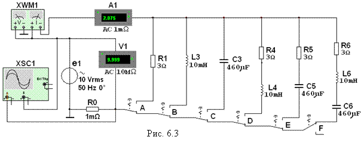

Задание 2. Запустить
лабораторный комплекс Labworks и среду МS10 (щёлкнув мышью на команде Эксперимент меню комплекса Labworks). Открыть файл 6.3.ms10, размещённый в папке Circuit Design Suitе 10.0 со схемой цепи синусоидального тока (рис. 6.3), или собрать
схему цепи на рабочем поле среды МS10 и установить:
- красный цвет провода, подходящего к каналу А осциллографа, и синий для провода,
подходящего к каналу В осциллографа;
- параметры пассивных элементов:
R0 = 1 мОм; R1 = R4 = R5 = R6 = int(120/N), Ом;
L2 = L4 = L6 = 100 - 2,5N, мГн; С3 = С5 = С6 = 100 + 10N, мкФ;
- параметры идеального источника синусоидального напряжения е1: ЭДС Е = 10 В (действующее значение), f = 50 Гц; Yu = 0;
- режим работы АС амперметра A1 и вольтметра V1; сопротивление амперметра 1 нОм;
сопротивление вольтметра 10 МОм;
-
чувствительность 2 мВ/дел (mV/div) канала А осциллографа,
в котором регистрируется напряжение, снимаемое с резистора R0; чувствительность 5
B/дел (5 V/div) канала В, в котором
регистрируется напряжение ветви; длительность развертки (TIME
BASE) в режиме Y/T - 2 мс/дел (2 ms/div);
- управляющие ключами А, В, С, D, E и F клавиши А, В, C, D, E и F клавиатуры.

Скопировать схему электрической цепи
синусоидального тока (рис. 6.3) на страницу отчёта.